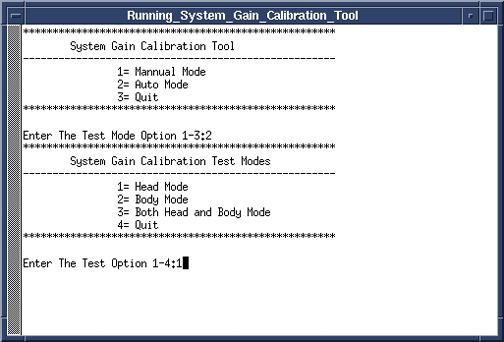
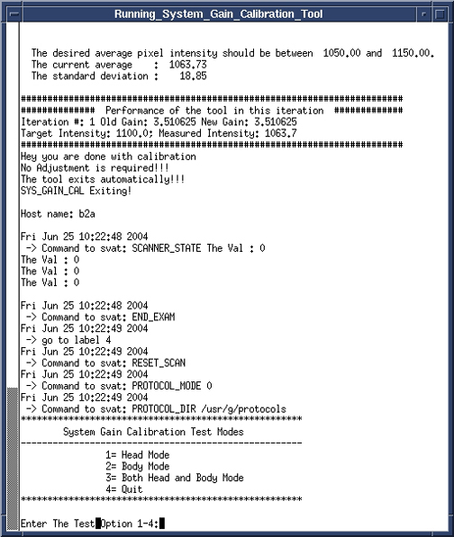

GE Exclusive Use Only
Direction 5440000, Rev# 5
Signa HDxt Service Methods
Module Version 1.0, Version Date 4/26/07
GE Exclusive Use Only |
| Required Persons | Preliminary Reqs | Procedure | Finalization |
|---|---|---|---|
| 1 | 0 min | 20 mins | 10 mins |
| Last Update | 08/17/2005 |
| ||||
| POISON HAZARD! | ||||
| 1.5T Phantoms CONTAIN NICKEL, A SUSPECT CARCINOGEN. | ||||
| DO NOT INGEST. DISPOSE OF AS A HAZARDOUS WASTE ACCORDING TO STATE AND FEDERAL REGULATIONS. |
| ||||
| Poison Hazard! | ||||
| 3.0T phantoms contain dimethyl Silicone Fluid. Do Not ingest. | ||||
| If a Leak or spill occurs, wipe up or absorb in inert material and place in a container for disposal. Incineration or landfill is the recommended disposal method. |
| Condition | Reference | Effectivity |
|---|---|---|
Signa software fully operational. | - | - |
Gradient Calibration is completed. | - | - |
No image artifacts. | - | - |
For systems with the new split top head coil position SNR Sphere in the head loader as shown in Illustration 1. To secure the SNR Sphere in side the loader, fasten the strap to the top of the head load . Position the head loader on top of the Head TLT loader positioner within the head coil so the loader is centered and the loader axial mark is at the center of the head coil window. See Illustration 2
Illustration 1: Position SNR Sphere in Head Loader

Illustration 2: Landmarking Head SNR Sphere

For systems with the quad head coil, the DQA phantom is used to help position the coil. Position the DQA phantom in the head coil.
Turn on the alignment lights and align so the center of the DQA phantom matches the axial beam.
Place the head TLT sphere in the head loader and fasten the strap to the top of the head loader to secure the sphere.
Remove the DQA phantom and replace with the head loader/sphere centering it using the axial alignment light.
Landmark on the head coil, and then pressMove to Scan.
Start the System Gain Calibration Tool.
Restricted Service tools available to GE Field Service. Make sure your service key is installed. Select [Calibration Wizard] from the calibration menu and select [Click here to start this tool]. Once the Calibration Wizard starts, select [System Gain Calibration] from the menu, review and okay the pre & post-dependencies, and select [Click here to start this tool]. If you are unable to start the Restricted Service tools, use the non-proprietary method described in the next bullet.
Starting non-proprietary service tools: From the Common Service Desktop, select [Calibration], [System Gain Calibration] from the calibration menu, and select [Click here to start this tool].
Once the tool starts, type 2<Enter> for Auto Mode.
To start the test, type 1<Enter> for Head Mode. See Illustration 3.
Illustration 3: Starting Head Mode Calibration

When testing is complete, results of the calibration will be displayed on the screen, and if adjustments are required, you will be asked “Do you want to save the recon scale factor”. To save the new calibration file, type “Y” and then press <Enter>. See Illustration 4.
Illustration 4: Calibration Output

To exit the tool, type 4<Enter>.
Remove all phantoms from the system.
Do a check scan to verify proper operation.